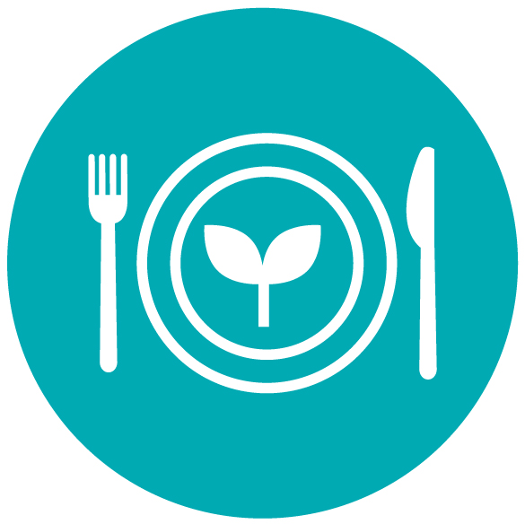
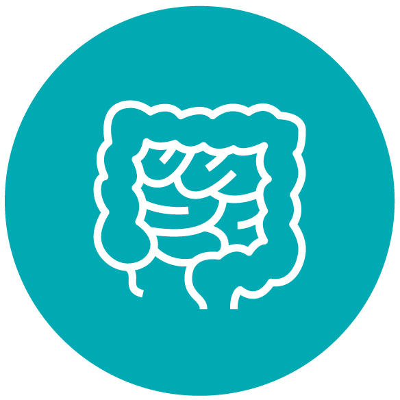
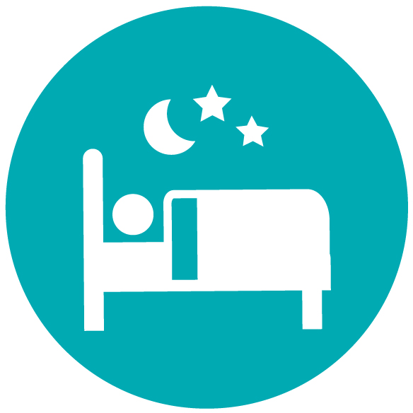
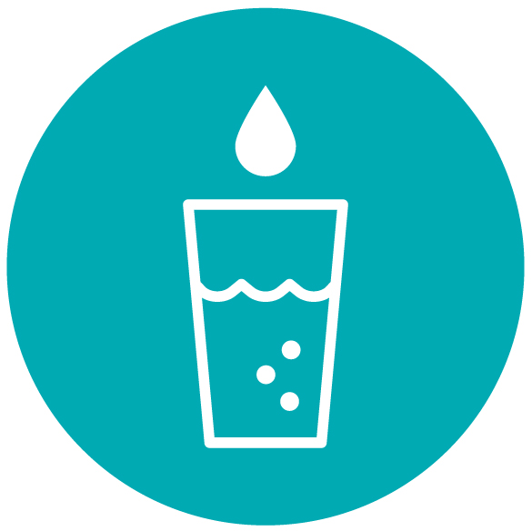
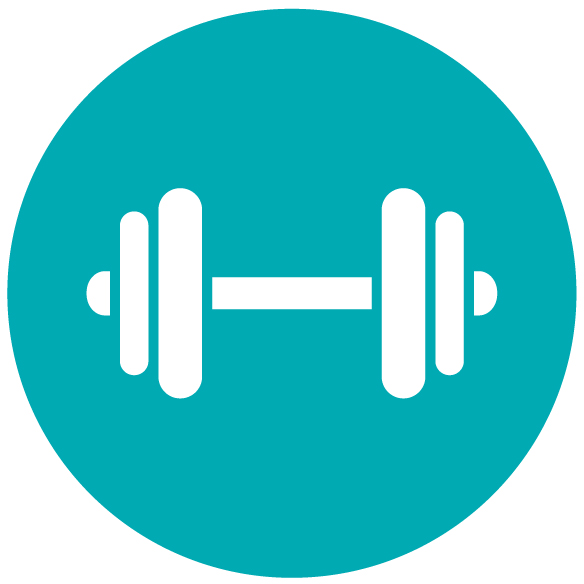
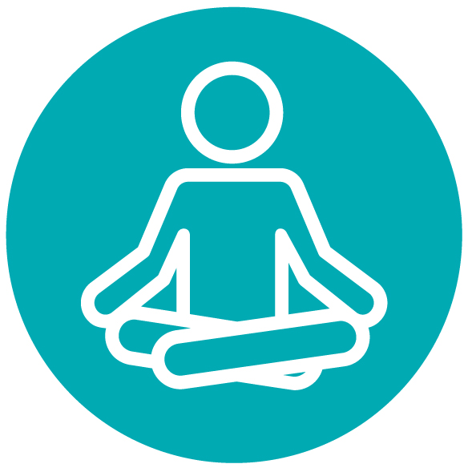
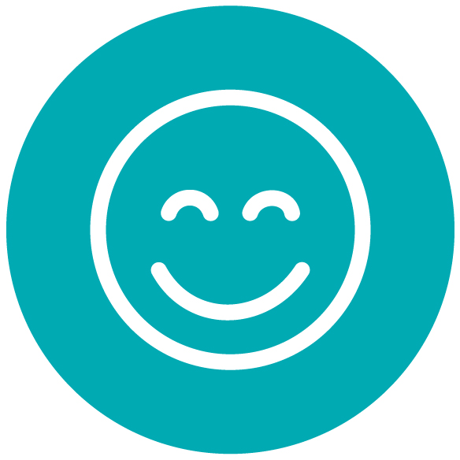

7 Ways to Boost Your Immune System
August 18 2021,
Jelena Cvetković Š.
FIRST LINE OF DEFENSE. The human immune system is the first line of defense against attacks in the form of harmful organisms from the outside (bacteria, viruses, fungi, parasites, etc.). Our logical goal is to keep that line of defense as strong as possible, for as long as possible.
Sometimes drugs can alleviate our symptoms, but the intensity of the virus's impact on our system depends, among other things, on how we maintain our health and thus our immunity.
How does it work?
The cells of our immune system are constantly active and work to destroy intruders. Human resistance to external influences depends on innate and acquired immunity. While our innate immunity is biologically inherited and active since our birth, we build acquired immunity throughout our lives. We strengthen it by exposing it to harmful organisms, the body reacts and creates everything it needs for defense, and thus we become resistant. The general opinion is that we have been resistant to viruses all our lives.
The immune system differs in each individual and is affected by various things. So we can say that genetics, gender, age or diet are just as important factors as stress, exercise, amount of sleep or past infections, etc. Overall, it is a way of life, because many of these things can be influenced by ourselves.
How to protect yourself?
Here are some suggestions:

1. INTAKE OF VITAMINS AND MINERALS
In order for the immune system to function properly, it needs specific nutrients. This means that certain elements from nature are important for the development of certain functions of our body. The most important of these elements are vitamins and minerals that directly strengthen immunity such as vitamin C, vitamin B, vitamin D, selenium, zinc and others.
The source of vitamins and minerals is in the plants we take in. They are found in many nutritious foods like green leafy vegetables, all kinds of fruits, nuts and legumes.

2. DIGESTION
Did you know that billions of microorganisms live in the human body? The sum of all microbes and microorganisms in the intestines is known as the intestinal microbiota or intestinal flora and is part of the microbiome of the entire human organism. Their genes have 150 times more genes than the whole human organism. The immune system is directly affected by the diverse intestinal flora, where its inhabitants fight against intruders on the one hand, and develop a kind of symbiosis with beneficial bacteria on the other. This relationship between bacteria and human cells is so important, because as much as 70-80% of immune cells are located in the intestines, where they balance and support each other. There must be something to it when they say that health springs from the gut.
When the balance of bacteria in the microbiota is correct (15% beneficial, 5% harmful and 80% neutral bacteria), it is called eubiosis. Then we feel good, the immune system is strong and we are healthy.
If we want to strengthen the immune system, prevent colds, sore throats, flu, allergies and other diseases, we must strengthen the intestines. Then it is recommended to add bacterial cultures in the form of a supplement. Probiotics are dietary supplements that are important for optimal immune resistance.

3. REST
In order for our body to regenerate well and prepare for all the challenges of the next day, we must have enough rest. Sleep is one of the most important sources of energy. Too much as well as too little sleep can have the opposite effect, so between 7 and 8 hours of sleep at night is an average, but each of us knows best how much we need.
During sleep, the processes of cell regeneration are activated, as well as a kind of reset that we really need for the work of the autonomic nervous system. These are the processes of detoxification and regulation of hormones and the entire glandular system.
That is why it is very necessary to give time to the body and mind for undisturbed and regular sleep.

4. WATER - ONE AND ONLY
We must have once heard that over 70% of our body is water, which is true. Our body is a huge mechanism in which communication takes place with different fluid flows such as blood, lymph through the cerebrospinal fluid, saliva to the very contents of our organs.
Water stimulates the excretion of toxins from the body and prevents dehydration. Alcohol and caffeine accelerate the removal of water from the body and weaken the absorption of nutrients, so it is good to avoid alcohol and caffeinated beverages if we feel tired or on the verge of illness. In any case, lukewarm water is better for the organism, because the body does not need to spend energy to heat it. It is recommended to drink 2-3 liters of water a day, depending on physical activity.

5. PHYSICAL ACTIVITY
Regular physical activity strengthens the immune system. Research has shown that regular exercise has positive effects on white blood cells, which are crucial in fighting disease. Physical activity also reduces stress, the stress hormone cortisol weakens the immune system and makes the body susceptible to infections and bacterial invasion.
With fast walking, running or some other activity 3 times a week, we can help ourselves to be more relaxed, to have better sleep and to make our body more resilient.
It is very important to listen to your body, stay active, but at the same time recognize the signs when we need rest, relaxation and recovery.

6. MEDITATION
Aristotle long ago established that a healthy body and a healthy mind are in a certain way interconnected. In order for the body to be healthy, a certain balance of vitamins, minerals, proteins and other nutrients is needed, but it is also important to maintain the balance of our mind, which is nourished by our thoughts and feelings.
It has been scientifically proven that meditation improves heart function, lowers high blood pressure, strengthens immunity, but also the secretion of happiness hormones, relieves depression, relieves stress, helps achieve absolute peace, creativity, accelerated learning and memory. The meditative state builds new neural connections in the brain.
We can say that it is a state of conscious presence, free from thoughts and emotions, at a given moment. There are various techniques for achieving this condition.
Regular meditation rests the mind almost as much as sleep, only for a short period of time.
Let us choose our style of meditation that will suit us best whether it is prayer or some other kind of connection with our true nature.

7. LAUGHTER
There are many things around us that make us happy and for which we can be grateful. A relaxed and grateful mind is the reason for the smile that is in our nature. It is said that we should laugh at least ten times every day, because there are so many advantages in that simple act. Research has confirmed that laughter reduces blood pressure and stress, boosts muscle tone and immune system function by raising levels of anti-inflammatory T-lymphocytes, gamma-interferon and B-lymphocytes, the cells responsible for antibody-mediated defense mechanisms. Laughter is also a trigger for the release of endorphins, natural substances for relieving pain, but also serotonin, the hormone of happiness.
Since laughter is not only good for dealing with stress, but also for maintaining brain health, don't forget to laugh as much as possible, even artificially :)
Photo credits:
iStockphoto